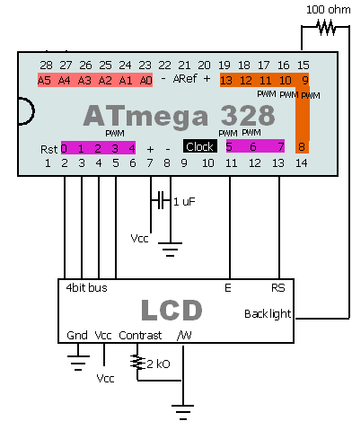

Summary
Arduino works fine with Character LCD (the classic 16 char x 2 lines). It can even use the 4 bits library, to save some pins (you end up needing 6 at minimum). However that library or at least the version I had was old (2006) and had some painful limitations. It's fixed in this version. Feel free to use, GPL free.
If you find it useful, it's good. If I've wasted 1/2 hour on a historical version, that's it for me. Comments welcome.
Edit : LiquidCrystal is much better, should have used it from start ...

An exemple on how to plug it. Count 7 pins for driving it (4 bits data %20 E %20 CS %20 Backlight)
Fixings
Based on the version of LCD4Bit v0.1 16/Oct/2006 neillzero
http://www.arduino.cc/playground/Code/LCD4BitLibrary http://abstractplain.net
- Pins must be contiguous : fixed !
- You can't specify the pins easily (must recompile the library itself) : now you can override it easily with lcd.overrideLCDPins(int pPins[], int pRS, int pRW, int pEnable)
- Annoying warning during build : fixed (added the missing parenthesis)
Download and install
Replace the version of Lib4bit you have with this one in the
\arduino-0015\hardware\libraries\LCD4Bit directory. That's all. Maybe drop the lib4bit.o and rebuild, in case. Enjoy.
LCD4Bit.zip
Links